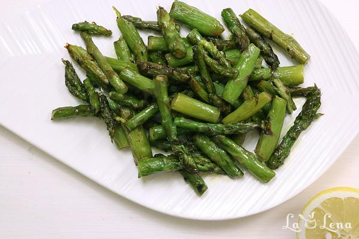

Sparanghel la tigaie, cu unt

Dificultate- foaste ușor
Timp de preparare-15 min
Cantitatea-500 grame
Pasul 1 In primul rand si obligatoriu, trebuie sa rupeti capetele lemnoase la fiecare tija de sparanghel. Totul e simplu - usor indoiti de fiecare si lasati sa se rupa de unde vrea, asa va asigurati ca sparanghelul va fi fraged si fara ate.
Pasul 2 Apoi taiati sparanghelul in bucati de 2-3 cm lungime.
Pasul 3 Puneti-le intr-o sita si le clatiti sub jet de apa rece la robinet. Lasati sa se scurga bine de apa..
Pasul 4 Intr-o tigaie adanca incalziti bine untul impreuna cu uleiul de masline. Ulei de masline va ajuta untul sa nu se arda in procesul de gatire.
Pasul 5 Adaugati sparanghelul si amestecati.
Pasul 6 Continuati sa-l gatiti la foc mare, periodic amestecati.
Pasul 7 Iar cand observati ca sparanghelul se rumeneste putin, potriviti de sare si inchideti focul. La fel il puteti asezona cu usturoi pisat si putina zeama de lamaie, noi l-am lasat simplu ca sa-i simtim gustul normal si sa-l accepte copiii.
Pasul 8 Il puteti servi ca garnitura la peste, carne, oua, etc. Este delicios cald, dar chiar si rece(eventual usor reincalzit).
Pofta Buna!